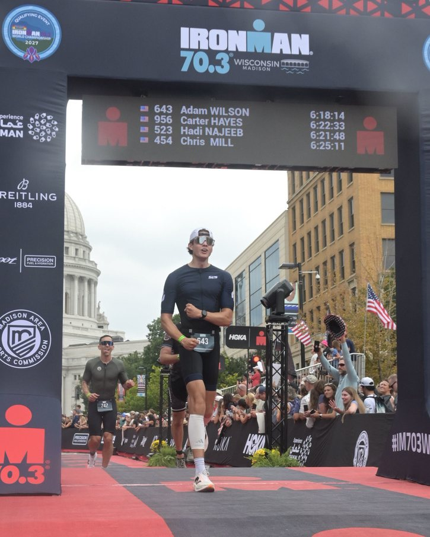
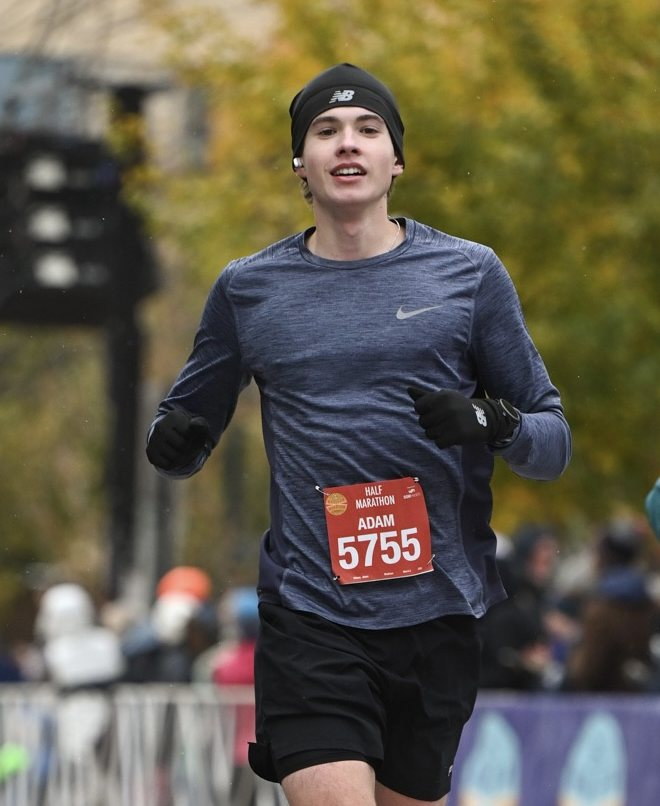
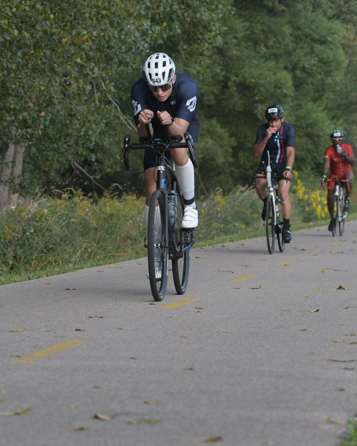
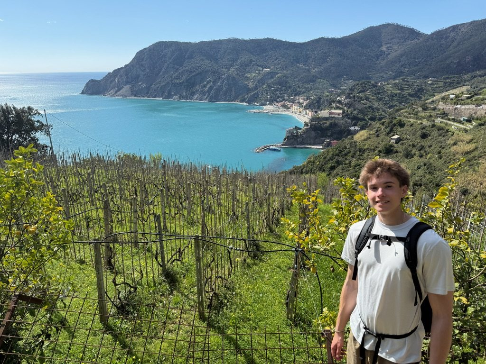
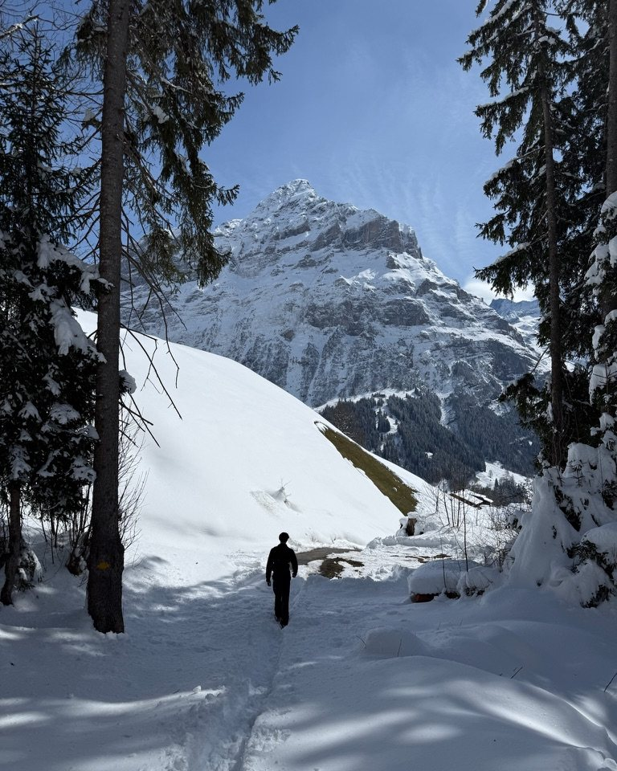
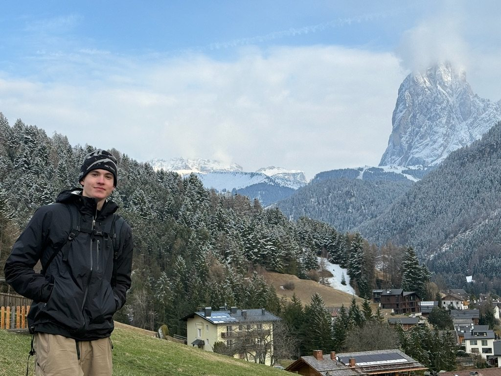
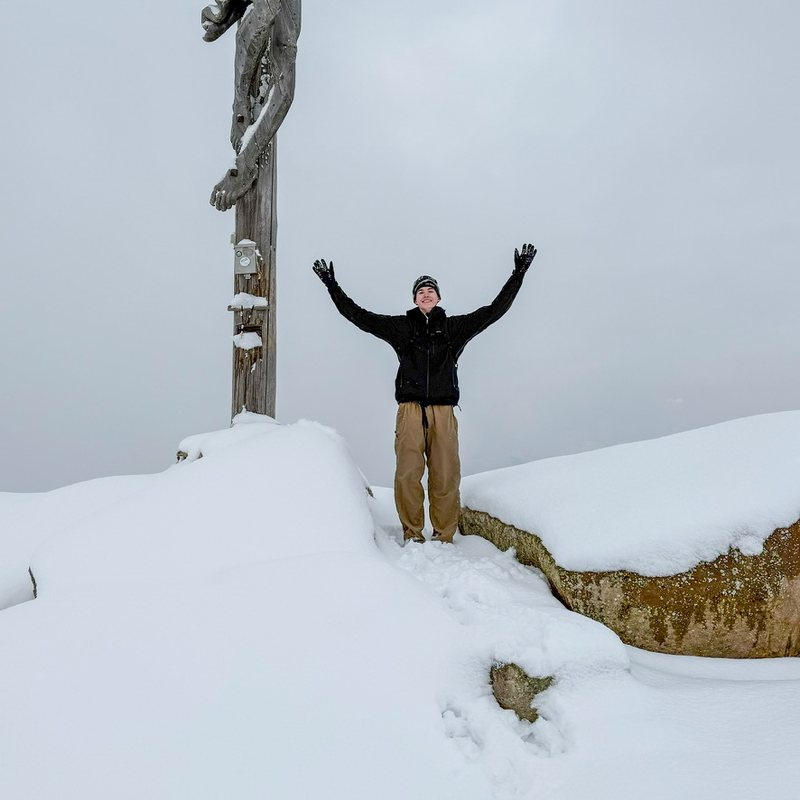
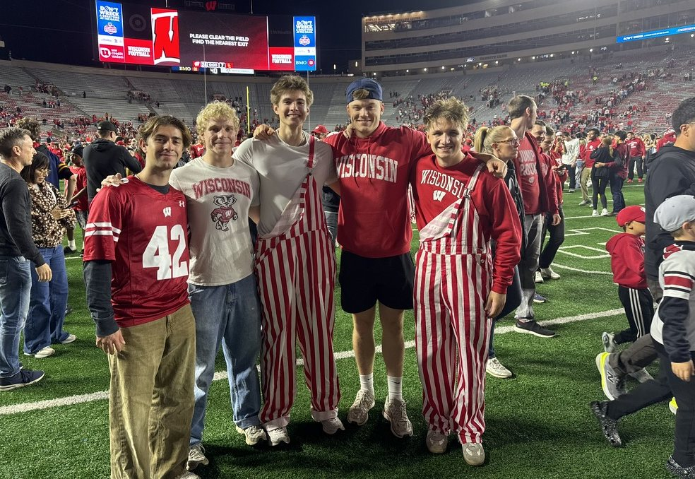
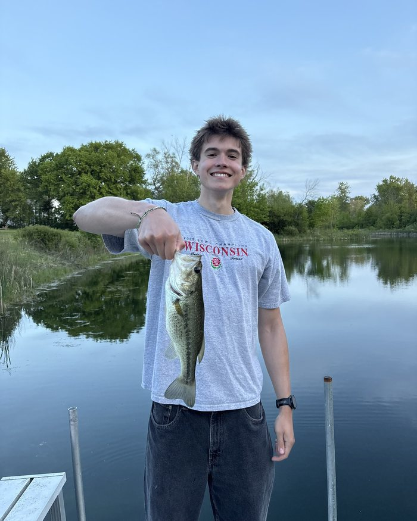

Hey, I'm Adam.
I build things people want to use.
I'm an Information Science student at UW–Madison, graduating in three years, with certificates in Computer Science, Product Management, and Digital Studies. I work where development, design, and communication meet — understanding what people need, designing the experience, and building it.
Outside of work
A few photos so you know who you'd actually be working with.
I'm an endurance athlete
Half marathons and an Ironman 70.3. Getting to the finish line takes a plan and being consistent every day.



I love the outdoors
I'm always up for exploring somewhere new, whether that's a coastal trail or a mountain summit.




Wisconsin, through and through
From Cedarburg to UW–Madison, Wisconsin is home. Badgers games, time on the water, and a good sunset.


Experience
Click any role to expand it
Under Armour Intern, Digital Teammate Experience (AI & Automation) Summer 2026Baltimore, MD
- Worked across 6 departments to build AI agents and automations, design system architecture, and create UI/UX mockups — turning stakeholder needs into working solutions.
- Partnered with Legal to build an AI agent that answers questions about global entity data, including historical records, by engineering a change-data-capture pipeline in Power Automate and TypeScript that gave the agent memory.
- Built a Copilot Studio agent for Sourcing & Costing, grounded in their SharePoint and Excel tools, that answers cost, margin, and factory-capability questions in plain language.
- Designed the architecture for an AV monitoring system that turns raw Syslog errors from specialty-space Crestron processors into diagnosed, plain-English ServiceNow tickets.
- Built a multi-agent pipeline in Elementum that converts technical design documents into operational runbooks, cutting a multi-hour task to minutes.
- Designed the UI/UX and information architecture for Technical Design's product standards library, replacing hundreds of scattered SharePoint pages with one filterable interface.
Kapco Inc. Intern, Head of Custom Applications 2025 – 2026Grafton, WI + Remote
- Appointed Head of Custom Applications, leading design, implementation, and optimization of critical apps for 500+ employees across the production floor and office.
- Led the conversion of legacy Visual Basic applications into ASP.NET web apps built for both desktops and workstation tablets.
- Led API integration development for a company-wide ERP migration from Infor Visual to Plex.
- Ran frequent meetings with leaders and employees to gather business needs and translate them into new or existing applications.
Kapco Inc. Intern, Software Developer 2023 – 2025Grafton, WI
- Developed and deployed 10+ ASP.NET and SQL-backed applications integrated with the company's ERP system.
- Built apps for steel purchasing, part tracking, barcode label printing, forklift inspection, and work instructions, reducing manual errors.
- Maintained SQL databases, queries, and reporting systems for real-time metrics and inventory analysis.
Landscaping & Window Cleaning Small Business Owner 2019 – 2025Cedarburg, WI
- Ran scheduling and operations for multiple clients, dividing work out on a weekly basis.
- Built long-lasting client relationships through years of high-quality service.
- Grew clientele 25% annually through door-to-door outreach, 300 business cards, and promotional incentives.
Education
University of Wisconsin–Madison
B.S. Information Science · Certificates in Computer Science, Product Management & Digital Studies
2024 – May 2027 · 3.85 GPA · Dean's List